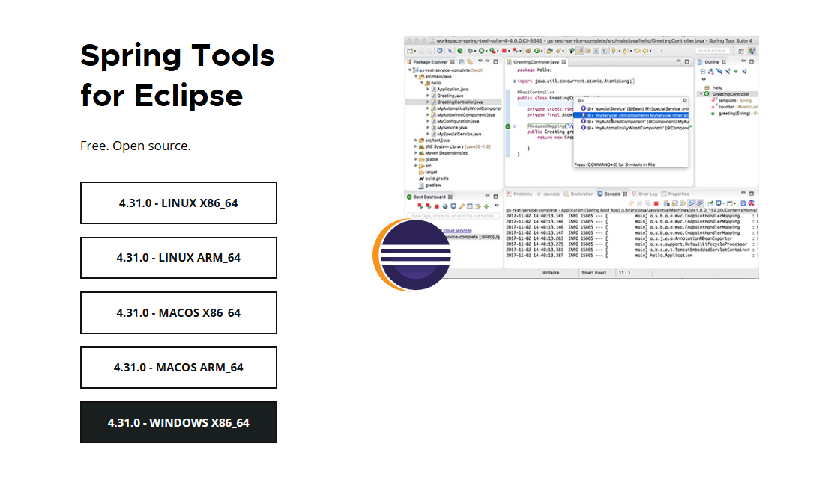
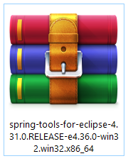
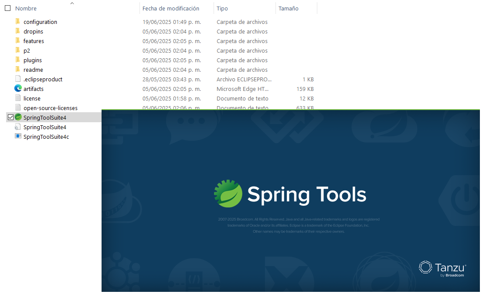
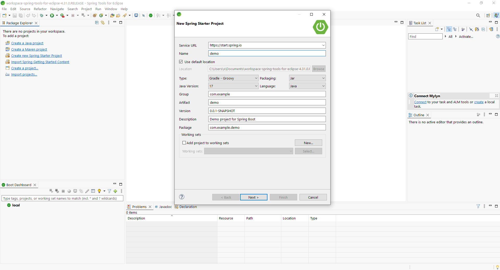
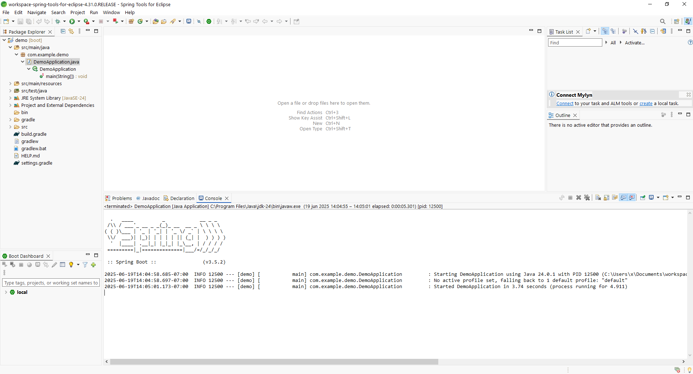

Installing Eclipse STS (Spring Tool Suite)
Eclipse STS (Spring Tool Suite) is an IDE tailored for Spring developers. It's based on Eclipse but comes pre-configured with tools and plugins for easier Spring Boot development.
Step 1: Download Eclipse STS
Visit the official Spring website to download the installer:
- 🌐 STS Downloads: https://spring.io/tools
Choose the version for your operating system (Windows, macOS, Linux).

⚠️ Make sure you have a JDK (Java Development Kit) installed and configured before running Eclipse STS. Preferably Java 17 or 21.
Step 2: Extract and Launch STS
- Once downloaded, unzip the file to a convenient location, for example:

-
Open the folder and launch:
-
SpringToolSuite4.exe(Windows) SpringToolSuite4.app(macOS)SpringToolSuite4executable (Linux)

Step 3: Configure JDK (If needed)
If STS doesn't detect your JDK:
- Go to
Window > Preferences > Java > Installed JREs. - Click Add > Standard VM.
- Locate your JDK folder (e.g.,
C:\Program Files\Java\jdk-21) and click Finish. - Select it as the default and click Apply and Close.
Step 4: Create a New Spring Boot Project
- Click on File > New > Spring Starter Project.
- Enter the project name and base package (e.g.,
com.example.demo). -
Choose:
-
Java version (17 or 21).
- Project type: Maven (recommended).
-
Dependencies: Spring Web, Spring Data JPA, PostgreSQL, etc.
-
Click Finish.
STS will generate a complete Spring Boot project ready to run and develop.

Step 5: Run Your Project
Once the project is created:
- Locate the main class (annotated with
@SpringBootApplication). - Right-click on it and select Run As > Spring Boot App.
✅ If everything is configured correctly, the embedded server (like Tomcat) will start, and your app will run locally.

Optional Tips
- 💡 Install Lombok Plugin: Go to
Help > Eclipse Marketplace, search for Lombok, and install it. - 🛠️ Dark Theme: Preferences > General > Appearance > Theme > Choose "Dark".
- 📦 Install More Plugins: Use the Eclipse Marketplace to add support for Git, Docker, etc.